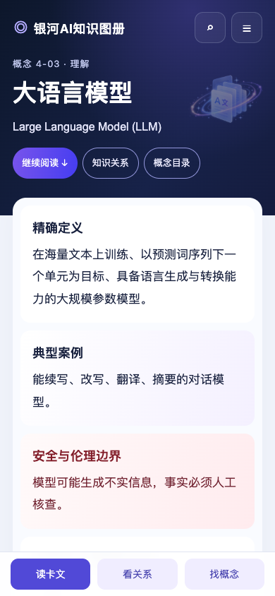
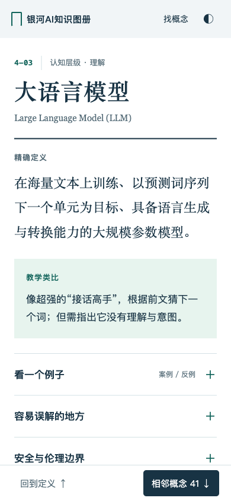

从「大语言模型」开始阅读，展开原文，找到相邻概念，再回到原来的位置。两份均可操作；先看手机首屏，再打开页面试读。
这次没有共同指定配色与布局。A 先生成视觉参考，再还原网页；B 用干净上下文独立设计 HTML。截图为 390 × 844 手机页面。
星空背景、语言卡片插画、分层阅读卡片。

纸面词条、衬线定义、按需展开阅读内容。

比较时可关注：哪份让你更愿意读下去，文字是否舒服，展开和找邻居是否自然，回到原词条是否顺手。原文和关系保持同一基线；这轮尚未选定正式风格。